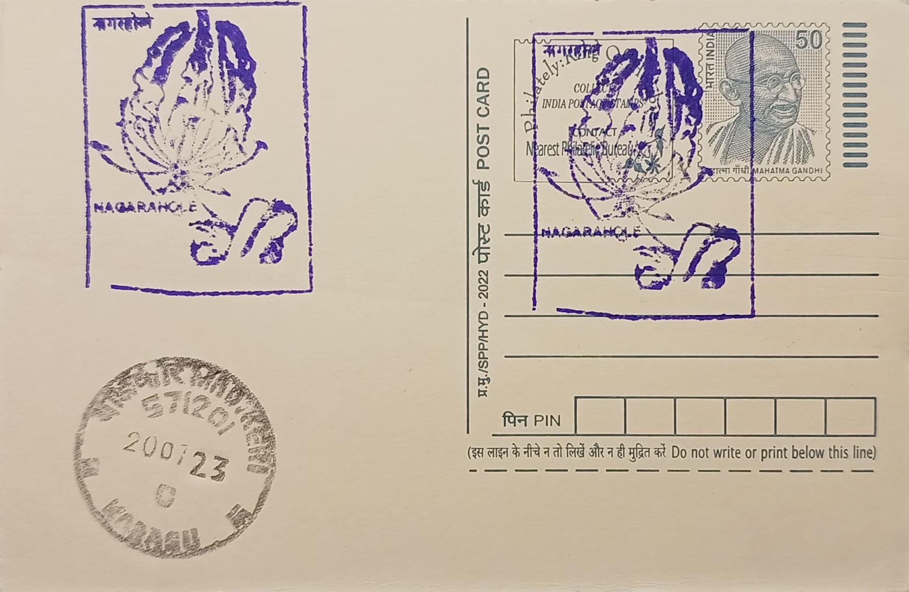

Gloriosa Superba (Wild Lily)
ಗ್ಲೋರಿಯೋಸಾ ಸುಪರ್ಬಾ (ಕಾಡು ಲಿಲ್ಲಿ)


The flame lily owes its scientific name, Gloriosa superba, to Carl Linnaeus, who coined it in 1753 from the Latin gloriosus, meaning glorious, in reference to the flower's dramatic, flame-shaped blossom. The genus name is shared with roughly half a dozen related Gloriosa species, placing the plant in the family Colchicaceae within the order Liliales, a lineage closely related to true lilies but distinguished by its colchicine-bearing tubers. Across the Indian subcontinent it carries numerous vernacular names, including kalihari in Hindi, reflecting its long recognition in regional systems of plant lore and traditional medicine well before its formal botanical description by European taxonomists.
As a species, Gloriosa superba holds a dual identity, valued simultaneously as a striking ornamental climber and as a medicinally and economically significant crop plant. It is formally recognised as the state flower of Tamil Nadu and additionally serves as the national flower of Zimbabwe, giving it symbolic standing on two continents where it grows wild. Ecologically, it is classed among the understorey and grassland-margin climbers of tropical Asia and Africa, thriving in the kind of semi-shaded, moisture-retentive forest fringe found across Kodagu district, where its seasonal appearance alongside the region's coffee and cardamom plantations marks it as part of the Western Ghats' wider floristic inventory rather than a mere cultivated garden escape.
Botanically, the plant grows from a distinctive V- or U-shaped underground tuber that persists through the dry season and sends up a slender, herbaceous stem capable of climbing several metres by means of tendrils formed at the tips of its glossy, lance-shaped leaves. The solitary flowers are borne on long axillary stalks, with six tepals that curve sharply backward as the bloom matures, typically showing crimson-red margins fading to yellow toward the base, though pure yellow and near-white forms are also recorded elsewhere in its range. Following pollination, the plant produces a large, inflated seed capsule containing winged seeds, and it is specifically the tubers and seeds, richest in colchicine and the related alkaloid colchicoside, that are harvested for pharmaceutical extraction.
A particularly notable aspect of the species is the gap between its commercial value and its danger to the people who cultivate it: in parts of Tamil Nadu and Andhra Pradesh, Gloriosa is grown under contract and government-supported schemes as a cash crop supplying colchicine for gout medication and for ongoing anti-cancer and anti-inflammatory research, yet accidental poisonings, sometimes mistaken for yam or sweet potato tubers in rural kitchens, have been documented in Indian medical literature and can be fatal without prompt treatment. This tension between economic promise and toxic risk has made the plant a recurring subject of agricultural extension advisories as well as toxicology case reports, setting it apart from most other ornamental climbers found in the same forest margins.
Within Kodagu specifically, the species is not under dedicated cultivation but persists as part of the wild flora recorded around forest and grassland patches near Nagarahole, an area better known for the adjoining Nagarahole National Park and Tiger Reserve, where botanical surveys and eco-tourism guides occasionally note the flame lily among the understorey species encountered on forest-edge trails. Its seasonal flowering, typically during the monsoon and immediately after, draws interest from local naturalists and photographers rather than organised harvesters in this particular district, distinguishing its role here from the commercial colchicine belts further south in Tamil Nadu. The plant therefore persists in Kodagu chiefly as a wild botanical curiosity, noted in regional flora checklists and nature trail descriptions rather than as an agricultural resource.
| Date of Introduction | November 6, 1987 |
|---|---|
| Address | Branch Postmaster, |
| Nagarahole BO, | |
| Kodagu (dt.), Karnataka - 571250. |